はじめに
Oracle Visual Builder Cloud Serviceは、ユーザー・インタフェース（UI）・コンポーネントをページにドラッグ・アンド・ドロップするだけで、Webアプリケーションやモバイル・アプリケーションを作成するためのビジュアル開発ツールです。 ボタンをクリックしてビジネス・オブジェクトを作成し、アプリケーションにCSVファイルをインポートしてデータを追加することができます。
このチュートリアルでは、部門と従業員のレコードを参照および作成、編集、削除するアプリケーションを作成します。
このチュートリアルの表記方法
このチュートリアルで使用している表記方法は次のとおりです。
| 表記方法 | 説明 |
|---|---|
| 「太字」 | ボタン、各種フィールドのラベルなどの GUI 要素 |
| <イタリック> | 使用する環境などによって置き換える部分を表すプレースホルダー |
固定幅フォント | 実行するコマンド、URL、サンプルコード、入力するテキスト |
本ドキュメントの操作は、ページの左右にある およびを利用して実施してください。
およびを利用して実施してください。
パート1: Webアプリケーションの作成
このパートでは、Oracle Visual Builder Cloud Service (VBCS) で Web アプリケーションを作成する際に、最初に定義する ビジュアル・アプリケーション と Web アプリケーション を作成する手順を説明します。
ビジュアル・アプリケーションの作成
Oracle Visual Builder (VBCS) では、最初に ビジュアル・アプリケーション を作成します。 ビジュアル・アプリケーションは、Web アプリケーションやモバイル・アプリケーションを開発するために使用するリソースの集まりです。 アプリケーションのソース・ファイルや、メタデータが記述された JSON ファイルを含んでいます。
-
Web ブラウザを使用して Oracle Visual Builder Cloud Service（以下 VBCS）にログインします。
-
VBCS の 「Visual Applications」 ページが表示されたら、「New Application」 ボタンをクリックします。
-
「Create Application」 ダイアログ・ボックスが表示されます。 次の表のように設定します。
設定項目 設定する値 説明 「Application name」 HR Applicationアプリケーションにつける名前 「Id」 hr_application_<xx>アプリケーションのID。アプリケーションの URL にも用いられるので、VBCSのインスタンス内で一意である必要があります。 <xx> の部分はご自身のイニシャルなどと置き換えてください。 「Description」 Tutorial Applicationアプリケーションの簡単な説明 「Application template」 Empty Application(デフォルト)アプリケーションのテンプレート 
値を設定したら、「Create Application」 ダイアログ・ボックスの 「Finish」 ボタンをクリックします。
ビジュアル・アプリケーションが作成されると、VBCSのアプリケーション・デザイナでビジュアル・アプリケーションがオープンします。 アプリケーション・デザイナにはアーティファクト・ブラウザとWelcomeスクリーンが表示されます。 Welcomeスクリーンには、VBCSでアプリケーションを作成するためのタスクのガイドが表示されます。

アプリケーション・デザイナの左側の領域はアーティファクト・ブラウザと呼ばれる領域で、アプリケーションを構成する各種ソース・ファイル（HTML/CSS/JavaScriptなど）や、データ・アクセスや画面フローの設定などアプリケーションを実行する際に必要となるメタデータ（JSONファイル）が表示され、アクセスできます。
アーティファクト・デザイナには、次のタブ・ページがあります。
- Service Connections
- Business Objects
- Mobile Applications
- Web Applications
- Components
- Processes
画面上部のアプリケーションの名前（Application nameとして指定したテキスト）の右隣に表示される 「dev」 と 「1.0」 はそれぞれ、アプリケーションのステータス（development: 開発中を表す）とバージョンを表しています。
次にWebアプリケーションの作成に進みます。
Web アプリケーションの作成
VBCS のビジュアル・アプリケーションは、1つ以上のWebアプリケーションまたはモバイル・アプリケーションを持ちます。 このチュートリアルでは、Webアプリケーションを作成します。
-
アーティファクト・ブラウザの 「Web Applications」 タブ
 をクリックします。
「+ Web Application」 ボタン（またはアーティファクト・ブラウザの右上にある 「＋」 アイコン）をクリックします。
をクリックします。
「+ Web Application」 ボタン（またはアーティファクト・ブラウザの右上にある 「＋」 アイコン）をクリックします。
-
「Create Web Application」 ダイアログ・ボックスが表示されたら、 「Application Name」 フィールドに
HRWebAppと入力し、 Navigation Style にNoneを選択し、 「Create」 ボタンをクリックします。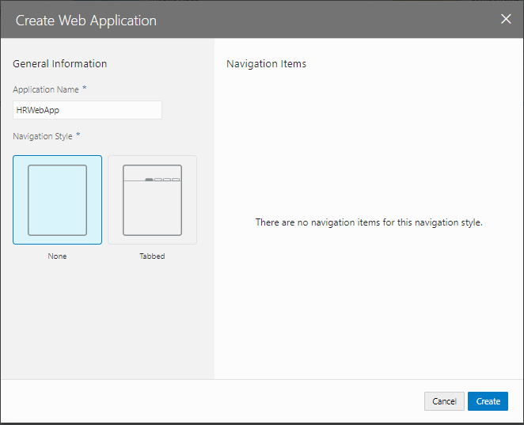
-
HRWebApp のアーティファクトが生成されます。 ページ・デザイナで表示されている 「main-start」 が、アプリケーションの起動時に最初に表示される画面です。

-
アーティファクト・ブラウザで 「HRWebApp」 ノードを展開するとWebアプリケーションの構造が表示されます。 「flows」 ノードと 「main」 ノードを展開すると 「main-start」 ページが表示されます。
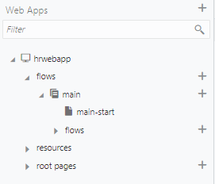
以上で、パート1は完了です。
パート2: ビジネス・オブジェクトの作成
このパートでは、パート1で作成したビジュアル・アプリケーションにビジネス・オブジェクトを作成します。 ビジネス・オブジェクトは、アプリケーションで扱うデータを保持するためのリソースです。 ビジュアル・アプリケーションにビジネス・オブジェクトを作成すると、データを格納するためのデータベース・テーブルが自動的に作成され、そのデータを参照、作成、更新、削除するためのREST APIにアクセスできるようになります。
このパートでは、次の3つのビジネス・オブジェクトを作成します。
- Location: オフィスの所在地のデータ
- Department: 部門のデータ
- Employee: 従業員のデータ
次の図は、このパートで作成する3つのビジネス・オブジェクト間の関係をダイアグラムで表したものです。

ビジネス・オブジェクト Location の作成
ここでは、オフィスの所在地を表すビジネス・オブジェクト Location を作成します。 次に、作成したビジネス・オブジェクトにフィールドを追加します。 最後に、CSV ファイルからデータをインポートします。
ビジネス・オブジェクトの作成
-
アーティファクト・ブラウザの 「Business Objects」 タブ
 をクリックします。
をクリックします。 -
アーティファクト・ブラウザにある 「+ Business Object」 ボタン、または右上部にある 「＋」（Create Business Object） アイコンをクリックします。
-
「New Business Object」 ポップアップ・ボックスが表示されたら、 表 2-1-1のように設定して、
 （Create）ボタンをクリックします。
（Create）ボタンをクリックします。設定項目 設定する値 説明 「Label」 Location作成するビジネス・オブジェクトの表示名 「Name」 Location作成するビジネス・オブジェクトを識別するためのID。Labelと同じ値が自動的に設定されます。 -
ビジネス・オブジェクトが作成されたら、 「Fields」 タブをクリックします。 5つのフィールドが定義されています。
- Id: レコードを一意に識別する ID
- creationDate: レコードの作成日時
- lastUpdateDate: レコードの最終更新日時
- createdBy: レコードを作成したユーザー
- lastUpdatedBy: レコードを更新したユーザー

フィールド name の作成
-
ビジネス・オブジェクト Location の 「Fields」 タブ・ページの 「+ New Field」 ボタンをクリックします。
-
ポップアップ・ボックスが表示されたら、追加するフィールドの設定を次の表のように設定し、
（Create）ボタンをクリックします。設定項目 設定する値 説明 「Label」 Name追加するフィールドのラベル 「Field Name」 name追加するフィールドを識別するための名前。Labelを入力すると自動的に設定されます。 「Type」 「String」 
追加するフィールドのデータ型 -
フィールド name が追加されると画面の右端のプロパティ・エディタに name のプロパティが表示されます。 「Constraints」 の下にある 「Required」 をチェックします。

-
プロパティ・エディタで 「Required」 をチェックすると、フィールド name は必須データ項目に設定されます。 レコードの作成や編集フォームで、値が入力されているかどうか自動的にチェックされるようになります。 「Required」 列にチェック・マークが表示されていることを確認します。
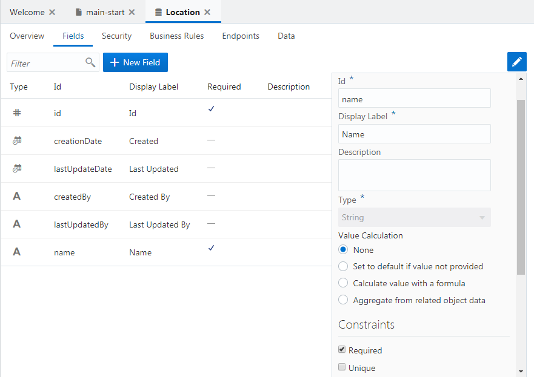
-
「Endpoints」 タブ・ページを開くと、このビジネス・オブジェクトのデータの参照、作成、更新、削除のための REST API のエンドポイントが一覧できます。

それぞれの行は左から、HTTPメソッド、エンドポイントのURL、エンドポイントを識別する名前、エンドポイントの説明が記述されています。
データのインポート
-
Location.csv をダウンロードします。 Location.csv には、4件の所在地データが含まれています。
-
アーティファクト・ブラウザの右上部に表示されている
 （「メニュー」）アイコンをクリックし、 「Data Manager」 を選択します。
（「メニュー」）アイコンをクリックし、 「Data Manager」 を選択します。
-
「Data Manager」 タブ・ページが表示されます。 「Import from File」 ボックスをクリックします。
-
「Confirm Import Data」 ダイアログ・ボックスが表示されます。 「Upload a file or drag it here」 と書かれたボックスをクリックするとファイルを開くウィンドウが表示されるので、ダウンロードした
Location.csvを開き、 「Import」 ボタンをクリックします。
-
「Import from File」 ダイアログ・ボックスにインポートが成功したことを表すメッセージが表示されたら、 「OK」 ボタンをクリックします。
-
アプリケーション・ナビゲーション・エリアの 「Business Objects」 タブ・ページで、 「Location」 を選択します。 「Data」 タブ・ページを開くと、追加されたレコードが表示されます。
次にビジネス・オブジェクト Departmentの作成に進みます。
ビジネス・オブジェクト Department の作成
ここでは、部門を表すビジネス・オブジェクト Department を作成します。
ビジネス・オブジェクト Department を作成するためには、事前にビジネス・オブジェクト Location を作成してある必要があります。 ビジネス・オブジェクト Location の作成手順は『ビジネス・オブジェクト Location の作成』で説明しています。
ビジネス・オブジェクトの作成
-
アーティファクト・ブラウザの 「Business Objects」 タブ
をクリックします。 -
アーティファクト・ブラウザの右上部にある 「+」 （Create Business Object）アイコンをクリックします。
-
「New Business Object」 ポップアップ・ボックスが表示されたら、次の表のように設定して、
（Create）ボタンをクリックします。設定項目 設定する値 「Label」 Department「Name」 Department
フィールド name の作成
-
ビジネス・オブジェクト Department の 「Fields」 タブ・ページの 「+ New Field」 ボタンをクリックします。
-
ポップアップ・ボックスが表示されたら、追加するフィールドの設定を表 2-2-2のように設定し、
（Create）ボタンをクリックします。設定項目 設定する値 「Label」 Name「Field Name」 name「Type」 「String」 を選択 -
フィールド Name が追加されると画面の右端のプロパティ・エディタに Name のプロパティが表示されます。 「Constraints」 の下にある 「Required」 をチェックします。
-
プロパティ・エディタで 「Required」 をチェックすると、追加されたフィールド Name は必須データ項目に設定されます。 「Required」 列にチェック・マークが表示されていることを確認します。
フィールド location の作成
-
ビジネス・オブジェクト Department の 「Fields」 タブ・ページの 「+ New Field」 ボタンをクリックします。
-
ポップアップ・ボックスが表示されたら、追加するフィールドの設定を次の表のように設定し、
（Create）ボタンをクリックします。設定項目 設定する値 説明 「Label」 Location「Field Name」 location「Type」 「Reference」  を選択
を選択「Reference Business Object」 「Location」 を選択 作成するフィールドがデータを参照するビジネス・オブジェクトを選択 「Default Display Field」 「Name」 を選択 データを編集する際のリストの表示に使用される、参照先のビジネス・オブジェクト（今回は Location）のフィールドを選択 
-
ビジネス・オブジェクト Department の 「Endpoints」 タブ・ページを開きます。 ビジネス・オブジェクト Department のデータを操作するためのエンドポイントが一覧できます。

ビジネス・オブジェクト Department は Location を参照しているので、
/Department/{Department_Id}/child/locationObjectというエンドポイントで Department が参照している Location のデータにアクセスできます。
次にビジネス・オブジェクト Employeeの作成に進みます。
ビジネス・オブジェクト Employee の作成
ここでは、従業員を表すビジネス・オブジェクト Employee を作成します。
ビジネス・オブジェクト Employee を作成するためには、事前にビジネス・オブジェクト Location と Department を作成してある必要があります。 ビジネス・オブジェクト Location の作成手順は『ビジネス・オブジェクト Location の作成』で、Department の作成手順は『ビジネス・オブジェクト Department の作成』でそれぞれ説明しています。
ビジネス・オブジェクトの作成
-
アーティファクト・ブラウザの 「Business Objects」 タブ
をクリックします。 -
アーティファクト・ブラウザの右上部にある 「+」 （Create Business Object）アイコンをクリックします。
-
「New Business Object」 ポップアップ・ボックスが表示されたら、次の表のように設定して、
（Create）ボタンをクリックします。設定項目 設定する値 「Label」 Employee「Name」 Employee
フィールド name の作成
-
ビジネス・オブジェクト Employee の 「Fields」 タブ・ページの 「+ New Field」 ボタンをクリックします。
-
ポップアップ・ボックスが表示されたら、追加するフィールドの設定を次の表のように設定し、 「Create」 ボタンをクリックします。
設定項目 設定する値 「Label」 Name「Field Name」 name「Type」 「String」 を選択 -
フィールド Name が追加されると画面の右端のプロパティ・エディタに Name のプロパティが表示されます。 「Constraints」 の下にある 「Required」 をチェックします。
-
プロパティ・エディタで 「Required」 をチェックすると、追加されたフィールド Name は必須データ項目に設定されます。 「Required」 列にチェック・マークが表示されていることを確認します。
フィールド department の作成
-
ビジネス・オブジェクト Employee の 「Fields」 タブ・ページの 「+ New Field」 ボタンをクリックします。
-
ポップアップ・ボックスが表示されたら、追加するフィールドの設定を次の表のように設定し、
（Create）ボタンをクリックします。設定項目 設定する値 「Label」 Department「Field Name」 department「Type」 「Reference」 を選択「Reference Business Object」 「Department」 を選択 「Default Display Field」 「Name」 を選択
フィールド hireDate の作成
-
ビジネス・オブジェクト Employee の 「Fields」 タブ・ページの 「+ New Field」 ボタンをクリックします。
-
ポップアップ・ボックスが表示されたら、追加するフィールドの設定を表 2-3-4のように設定し、
（Create）ボタンをクリックします。設定項目 設定する値 「Label」 Hire Date「Field Name」 hireDate「Type」 「Date」  を選択
を選択
フィールド email の作成
-
ビジネス・オブジェクト Employee の 「Fields」 タブ・ページの 「+ New Field」 ボタンをクリックします。
-
ポップアップ・ボックスが表示されたら、追加するフィールドの設定を表 2-3-5のように設定し、
（Create）ボタンをクリックします。設定項目 設定する値 「Label」 Email「Field Name」 email「Type」 「Email」  を選択
を選択 -
4つのフィールドを追加したら、ビジネス・オブジェクト Employee の 「Endpoints」 タブ・ページを開きます。

Employee は Department を参照し、 DepartmentはLocation を参照しているので、それぞれのノードを展開するとこのパートで作成した3つのビジネス・オブジェクトすべてにアクセスできることがわかります。
以上で、パート2は完了です。
パート3: データを参照・作成するページの作成
このパートでは、パート2で作成したビジネス・オブジェクト Departmentとビジネス・オブジェクト Employeeそれぞれのレコード一覧をテーブル形式で表示するページとレコードを作成するページを作成します。
- Department のレコードの一覧を表示するテーブルの追加
- Department のレコードを作成するページの追加
- Employee のレコードの一覧を表示するページの追加
- Employee のレコードを作成するページの追加
- ページの名前の変更
Department のレコードの一覧を表示するテーブルの追加
見出しの追加
-
アーティファクト・ブラウザの 「Web Applications」 タブ
 をクリックします。
をクリックします。 -
「flows」 および 「main」 ノードを展開し、「main-start」 をクリックします。 アプリケーション・デザイナで main-start ページが表示されます。
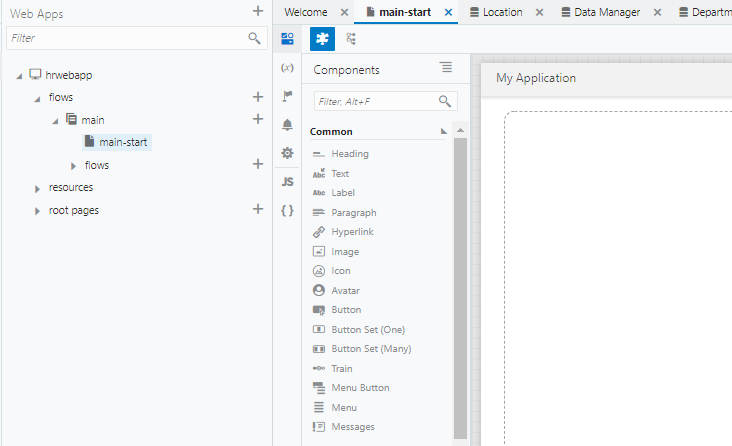
アプリケーション・デザイナの左側には、コンポーネント・パレットが表示されます。 コンポーネント・パレットは、デザイナの左上にある
 （Component Palette）アイコンで表示/非表示を切り替えることができます。
（Component Palette）アイコンで表示/非表示を切り替えることができます。また、アーティファクト・ナビゲータも表示/非表示を切り替えることができます。 アーティファクト・ナビゲータ非表示にするには、右上にある
 （Collapse App Nav）アイコンをクリックします。
（Collapse App Nav）アイコンをクリックします。アーティファクト・ブラウザが非表示のときに 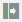 （Expand App Nav）アイコンをクリックすると、再びアーティファクト・ブラウザが表示されます。
-
ページに見出しを追加します。 コンポーネント・パレットの 「Common」 の下にある 「Heading」 コンポーネントをページにドラッグ＆ドロップします。
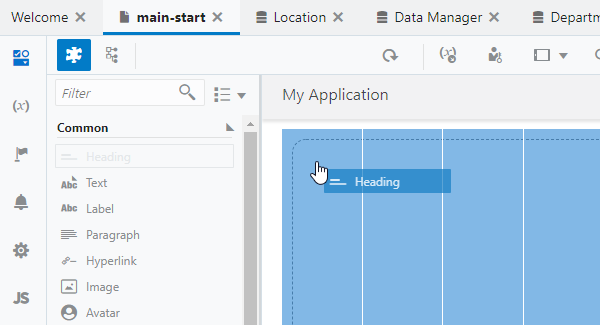
-
ページに Heading コンポーネントが追加されると、プロパティ・インスペクタで Heading コンポーネントの設定を変更できます。 デザイナ・ツールの右側にプロパティ・インスペクタが表示されない場合は、画面右上に表示される 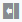 （Collapse Property Inspector）アイコンをクリックします。
Heading コンポーネントのプロパティ・インスペクタで、 「Text」 フィールドに
部門一覧と入力します。
テーブルの追加
-
コンポーネント・パレットを下にスクロールし、 「Collection」 カテゴリの 「Table」 コンポーネントを、追加済みの Heading コンポーネントの下にドラッグ＆ドロップします。
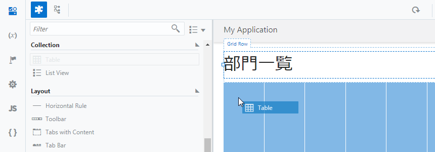
-
追加された Table コンポーネントのプロパティ・インスペクタで
 （Quick Start）タブを開き、「Add Data」 をクリックします。
（Quick Start）タブを開き、「Add Data」 をクリックします。
-
「Add Data」 ダイアログ・ボックスが表示されます。 「Locate Data」 ページでは、テーブルに表示するデータを取得する REST エンドポイントを選択します。 「Business Objects」 の 「Department」 を選択します。
この手順により、REST エンドポイント（GET /Department）にてデータを取得する設定ができます。
「Next」 ボタンをクリックします。
-
「Add Data」 ダイアログ・ボックスの 「Bind Data」 ページでは、テーブルの列を選択します。 「item[i]」 ノードの下の 「id」 と 「name」 を順番に選択します。
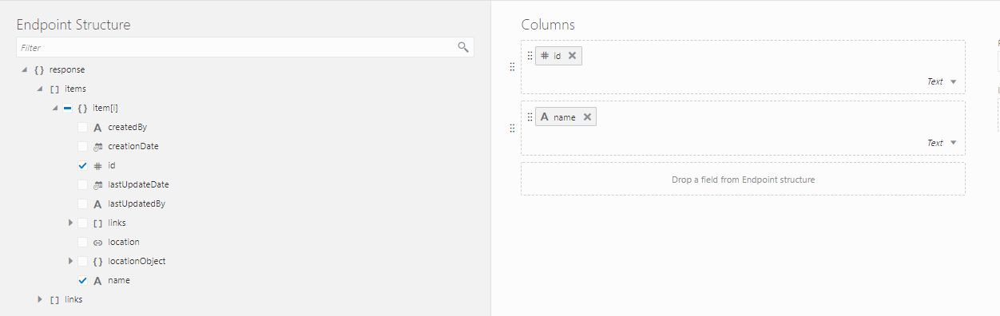
「Add Data」 ダイアログ・ボックスの右側にあるColumnsリストに、 「items/id」、 「items/name」 の順に表示されていることを確認します。 表示されている順番が異なる場合は、
 をドラッグ ＆ ドロップして順番を入れ替えます。
をドラッグ ＆ ドロップして順番を入れ替えます。 -
次に、 「locationObject」 とその下の 「items」 ノードを展開します。 このとき、 「item[i]」 ノードも同時に展開されるので、「name」 をチェックします。

「Columns」 リストの一番下に、「name」 が追加されていることを確認したら、「Next」 ボタンをクリックします。
-
「Add Data」 ダイアログ・ボックスの 「Define Query」 ページでは、そのまま 「Finish」 ボタンをクリックします。
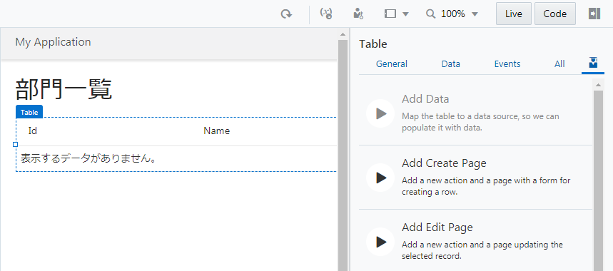
追加されたテーブルの設定の確認と変更
-
アプリケーション・デザイナの
 （Variables & Types）アイコンをクリックします。
アプリケーション・デザイナの Variables エディタでは、ページに定義された変数が一覧できます。
main-start ページには、 「departmentListSDP」 という名前の変数が定義されています。
（Variables & Types）アイコンをクリックします。
アプリケーション・デザイナの Variables エディタでは、ページに定義された変数が一覧できます。
main-start ページには、 「departmentListSDP」 という名前の変数が定義されています。
この変数は、Quick Start メニューによって設定した REST エンドポイント（
GET /Department）によって取得したデータを保持します。 -
アプリケーション・ナビゲータの
 （Designer）アイコンをクリックします。
追加されたテーブルをクリックし、プロパティ・インスペクタの 「Data」 タブ・ページを開きます。
「Data」 フィールドには、テーブルに表示するデータの設定が記述されています。
（Designer）アイコンをクリックします。
追加されたテーブルをクリックし、プロパティ・インスペクタの 「Data」 タブ・ページを開きます。
「Data」 フィールドには、テーブルに表示するデータの設定が記述されています。
-
テーブル・コンポーネントのプロパティ・インスペクタの 「Data」 タブ・ページでは、テーブルの列ヘッダーのテキストを変更できます。
- 「Table Columns」 リストの上から二番目の 「Name」 をクリックして
部門名に変更します。 - 「Table Columns」 リストの一番下に表示されている 「Name」 をクリックして
所在地に変更します。

- 「Table Columns」 リストの上から二番目の 「Name」 をクリックして
次にDepartment のレコードを作成するページの追加に進みます。
Department のレコードを作成するページの追加
ページの作成
-
アプリケーション・デザイナで main-start ページを開き、『Department のレコードの一覧を表示するテーブルの追加』 で追加した Table コンポーネントを選択します。 Table コンポーネントのプロパティ・インスペクタで
（Quick Start）アイコンをクリックし、「Add Create Page」 をクリックします。 -
「Add Create Page」 ダイアログ・ボックスが表示されます。 「Select Endpoint」 ページでは、レコードを作成する際にコールする REST エンドポイントを指定します。 「Business Objects」 → 「Department」 を選択します。
この設定により、REST エンドポイント（POST /Department）にてデータを登録する設定ができます。「Next」 ボタンをクリックします。
-
「Add Create Page」 ダイアログ・ボックスの 「Page Details」 ページの 「Select fields」 で 「name」 と 「location」 を順番にチェックします。 ここで選択されたフィールドは、データを作成するフォームで値を入力できます。 ビジネス・オブジェクト Department の location フィールドは、ビジネス・オブジェクト Location のデータを参照するように設定したので、作成フォームではドロップダウン・リストから値を選択できるようになります。

画面右側の 「Button label」 テキスト・フィールドの値を
作成に変更します。 クリックすると作成されるページにナビゲートするボタンのラベル・テキストが 「作成」 に設定されます。次に、「Page Title」 テキスト・フィールドの値を
部門レコードの作成に変更します。 作成されるページのタイトルに使用されます。「Page name」 には
CreateDepartmentを入力して、「Finish」 ボタンをクリックします。 -
「Add Create Page」 ダイアログ・ボックスで 「Finish」 ボタンをクリックすると、main-start ページの Heading コンポーネントと Table コンポーネントの間に Toolbar コンポーネントが追加されます。 Toolbar コンポーネントの中には、「作成」 ボタンが配置されています。

作成したページの動作確認
-
アーティファクト・ブラウザで 「CreateDeparment」 ページをクリックし、アプリケーション・デザイナで開きます。
-
画面右上にある 「Live」 ボタンをクリックすると、ボタンが緑色に変化します。 これによりデザイナがライブ・モードになり、CreateDepartment ページの動作確認が可能な状態になります。
「Name」 フィールドに
管理部と入力し、 「Location」 フィールドで 「Floor 1」 を選択したら、 「Save」 ボタンをクリックします。 -
main-start ページをアプリケーション・デザイナで開きます。 テーブルにこのセクションで追加したデータが表示されない場合は、
 （Reload Page）ボタンをクリックして、ページの再読み込みを実行します。
（Reload Page）ボタンをクリックして、ページの再読み込みを実行します。
ページ・ナビゲーションの設定の確認
-
ライブ・モードが有効になっている（Liveボタンが緑色で表示されている）場合は、 「Live」 ボタンをクリックしてデザイン・モードに戻します。
-
main-start ページに追加された 「作成」 ボタンをクリックします。 プロパティ・インスペクタの 「Events」 タブ・ページを開くと、 「作成」 ボタンがクリックされる（ojActionイベントが発生する）と 「navigateToCreateDepartmentChain」 という名前のアクション・チェーンが起動されるように設定されていることがわかります。
-
プロパティ・インスペクタの 「Events」 タブ・ページで、 「Action Chain」 の下に表示されている 「navigateToCreateDepartmentChain」 をクリックします。 アクション・チェーンの設定がビジュアルに表示されます。
Department レコードの作成処理の設定の確認
-
アーティファクト・ブラウザで 「CreateDepartment」 ページをクリックし、
（Variables & Types）タブをクリックします。
CreateDepartment ページには、2つの変数が定義されていることがわかります。department- ビジネス・オブジェクト Department のレコードを作成するためのデータを保持するための変数です。nameは、name フィールドに、locationは location フィールドにそれぞれバインドされています。locationListSDP- Locationフィールドの選択肢を表示させるために使用されます。

-
CreateDepartment ページで
（Designer）タブをクリックします。
「Save」 ボタンを選択し、プロパティ・インスペクタの 「Event」 タブ・ページを開きます。
clickイベントが発生したときはアクション・チェーン 「createDepartmentChain」 が実行されることが確認できます。
-
プロパティ・インスペクタの 「Event」 タブ・ページでアクション・チェーン 「createDepartmentChain」 をクリックすると、アクション・チェーンの処理フローがビジュアルに表示されます。 「Call REST Endpoint businessObjects/create_Department」 で、ビジネス・オブジェクト Department の REST エンドポイント create_Department (POST /Departmen) をコールしています。

データの作成が成功した場合は処理が成功したことを通知するメッセージを表示し、ひとつ前の画面にナビゲートします。 データの作成に失敗した場合は、エラーメッセージを表示します。
-
アクション・チェーンのダイアログで、 「Call REST Endpoint businessObjects/create_Department」 をクリックすると、プロパティ・インスペクタで REST エンドポイント呼び出しの設定を確認できます。 プロパティ・インスペクタを下にスクロールし、 「Parameters」 の横にある 「Assign」 をクリックします。
「Map Variables To Parameters」 ダイアログ・ボックスが表示されます。

パラメータ 「body」 には CreateDepartment ページの変数
departmentがマップされていることを確認したら、 「Cancel」 をクリックしてダイアログ・ボックスを閉じます。
次にEmployee のレコードの一覧を表示するページの追加に進みます。
Employee のレコードの一覧を表示するページの追加
ページの作成
-
アーティファクト・ブラウザの 「Web Applications」 タブ
をクリックします。
「HRWebApp」 → 「flows」 ノードを展開し、 「main」 ノードの右に表示される 「＋」 アイコン（Create Page）をクリックします。
-
「Create Page」 ダイアログ・ボックスが表示されます。 「Id」 フィールドに初期表示される
main-を削除し、Employeesと入力します。
「Create」 ボタンをクリックすると、Employees ページが作成され、アプリケーション・デザイナで表示されます。
-
コンポーネント・パレットの 「Common」 の下にある 「Heading」 コンポーネントを Employees ページにドラッグ＆ドロップします。
-
Heading コンポーネントのプロパティ・インスペクタで、 「Text」 フィールドに
従業員一覧と入力します。
テーブルの追加
-
コンポーネント・パレットを下にスクロールし、 「Collection」 カテゴリの 「Table」 コンポーネントを、追加済みの Heading コンポーネントの下にドラッグ＆ドロップします。
-
追加された Table コンポーネントのプロパティ・インスペクタで
（Quick Start）タブを開き、「Add Data」 をクリックします。 -
「Add Data」 ダイアログ・ボックスが表示されます。 「Locate Data」 ページでは、テーブルに表示するデータを取得する REST エンドポイントを選択します。 「Business Objects」 → 「Employee」 を選択します。
-
「Add Data」 ダイアログ・ボックスの 「Bind Data」 ページでは、テーブルの列を選択します。 「item[i]」 ノードの下に表示されている 「id」、「name」、「hireDate」、「email」 を順番にチェックします。
「Add Data」 ダイアログ・ボックスの右側に表示される 「Columns」 リストに、次の順番で表示されていることを確認します。
- id
- name
- hireDate
表示されている順番が異なる場合は、
アイコンをドラッグ ＆ ドロップして順番を入れ替えます。 -
さらに同ページの 「departmentObject」 → 「items」 ノードを展開すると、その下にある 「item[i]」 ノードが自動的に展開されます。 「Name」 をチェックしてから 「Next」 ボタンをクリックします。
-
「Add Data」 ダイアログ・ボックスの 「Define Query」 ページでは、そのまま 「Finish」 ボタンをクリックします。
-
追加された Table コンポーネントのプロパティ・インスペクタを開き、 「Data」 タブをクリックします。 次の表のようにテーブルの列ヘッダーのテキストを変更します。
変更前 変更後 Name （「Table Columns」 リストの上から2番目） 氏名 Hire Date 雇用日 Name （「Table Columns」 リストの上から2番目） 所属部門 
次にEmployee のレコードを作成するページの追加に進みます。
Employee のレコードを作成するページの追加
ページの作成
-
『Employee のレコードの一覧を表示するページの追加』で作成した Employees（従業員一覧）ページをアプリケーション・デザイナの
（Designer）タブ・ページで開きます。追加された Table コンポーネントのプロパティ・インスペクタで
（Quick Start）タブを開き、 「Add Create page」 をクリックします。 -
REST API のエンドポイントを選択します。 「Business Objects」 → 「Employee」 を選択し、 「Next」 ボタンをクリックします。
-
「Add Create page」 ダイアログ・ボックスの 「Page Details」 ページでは、レコードを作成するフォームで値を指定する Employee ビジネス・オブジェクトのフィールドを選択します。 「name」、「hireDate」、「email」、「department」 をチェックします。
画面右側の 「Button label」 テキスト・フィールドの値を
作成に変更します。 次に、「Page Title」 テキスト・フィールドの値を従業員レコードの作成に変更します。 「Page name」 はCreateEmployeeを入力して 「Finish」 ボタンをクリックします。 -
「Add Create Page」 ダイアログ・ボックスで 「Finish」 ボタンをクリックすると、main-start ページの Heading コンポーネントと Table コンポーネントの間に Toolbar コンポーネントが追加されています。 Toolbar コンポーネントの中には、「作成」 ボタンが配置されています。

作成したページの動作確認
-
アーティファクト・ブラウザで 「CreateEmployee」 ページをクリックし、アプリケーション・デザイナで開きます。
-
画面右上にある 「Live」 ボタンをクリックして、ライブ・モードを有効します。 適当なデータを入力して、「Save」 ボタンをクリックします。

-
アーティファクト・ブラウザで 「Employees」 をクリックし、Employees（従業員一覧）ページをアプリケーション・デザイナの
（Designer）タブ・ページで開きます。Employees ページをアプリケーション・デザイナで開きます。 テーブルにこのセクションで追加したデータが表示されない場合は、
（Reload Page）ボタンをクリックして、ページの再読み込みを実行します。
-
画面右上にある 「Code」 ボタンをクリックすると、Employees ページの HTML ソースを確認したり、直接編集したりすることができます。

divタグやh1タグなど通常の HTML タグのほかに、oj-tableなど、名前がoj-で始まるタグが使用されています。oj-で名前が始まるタグは、 Oracle JavaScript Extension Toolkit (JET) が提供するコンポーネントです。「Design」 ボタンをクリックして、デザイナ・ビューに戻ります。
次にページの名前の変更に進みます。
ページの名前の変更
このパートではここまでに、次の3つのページを新たに作成しました。
- CreateDepartment（部門レコードの作成） -- ビジネス・オブジェクト Department のレコードを作成
- Employees（従業員一覧） -- ビジネス・オブジェクト Employee の一覧を表形式で表示
- CreateEmployee（従業員レコードの作成） -- ビジネス・オブジェクト Employee のレコードを作成
これらのページにあわせて、main-start ページの名前を Departments に変更してみます。
-
アーティファクト・ブラウザの 「Web Applications」
タブ・ページで 「HRWebApp」 → 「flows」 → 「main」 ノードを展開し、 「main-start」 ページを右クリックします。 -
「Rename」 ダイアログ・ボックスが表示されたら、 「Id」 を
main-startからdepartmentsに変更し、 「Rename」 ボタンをクリックします。
-
アーティファクト・ブラウザで、main-start ページが departments に変更されていることを確認します。
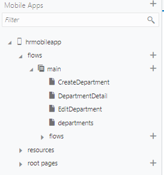
-
アーティファクト・ブラウザの 「Web Applications」
タブ・ページで 「HRWebApp」 → 「flows」 → 「main」 をクリックし、
 （Settings）をクリックします。
（Settings）をクリックします。
「Default Page」 で、 「departments」 が選択されていることを確認します。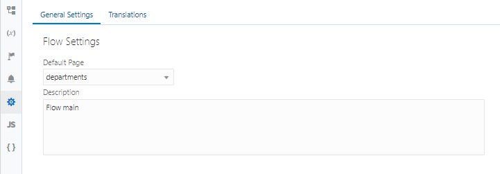
以上で、パート3は完了です。
パート4: ページ間のナビゲーションの設定
このパートでは、パート3で作成・編集したページ
- Departments (部門一覧)
- Employees (従業員一覧)
にボタンを追加し、それぞれのページ間のナビゲーションを設定します。
Departments ページから Employees ページへのナビゲーション
ここでは、Departments （部門一覧）ページに、「従業員一覧」 ボタンを追加します。 「従業員一覧」 ボタンをクリックすると Employees ページ（従業員一覧）にナビゲートするように設定します。
-
アーティファクト・ブラウザの 「Web Applications」 タブ
 をクリックします。
をクリックします。「HRWebApp」 → 「flows」 → 「main」 ノードを展開して、 「Departments」 ページを開きます。 アプリケーション・デザイナの
 （Designer）タブ・ページで開きます。
（Designer）タブ・ページで開きます。 -
コンポーネント・パレットから、 「Button」 コンポーネントを Toolbar コンポーネントの中（「作成」 ボタンの右隣）にドラッグ＆ドロップします。
-
追加した Button コンポーネントのプロパティ・インスペクタを開きます。 「General」 タブ・ページの 「Text」 フィールドを
従業員一覧と編集します。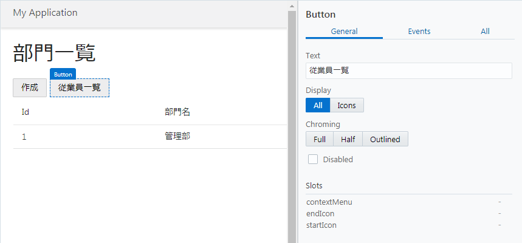
-
「従業員一覧」 ボタンのプロパティ・インスペクタで、 「Events」 タブ・ページを開きます。 「+ New Event」 ボタンをクリックすると表示されるメニューから 「Quick Start: 'ojAction'」 を選択します。

これにより、「従業員一覧」 ボタンがクリックされた時に起動される、 Id が ButtonClickAction のアクション・チェーンが定義されます。
-
画面の左側には、アクション・パレットが表示されています。 アクション・パレットを下にスクロールし、 「Navigation」 カテゴリから 「Navigate」 を 「Start」 アクションの下に表示されている 「＋」 マークの上にドラッグ＆ドロップします。

-
画面の右側に 「Navigate」 パネルが表示されたら、 「Select Target」 ボタンをクリックします。
-
「Select Target」 ダイアログ・ボックスが表示されたら、 「Peer Page」 をクリックします。

-
ナビゲート可能なページのリストが表示されるので、 「Employees」 を選択したら、 「Select」 ボタンをクリックします。
-
画面右上にある
 （Run） ボタンをクリックします。
（Run） ボタンをクリックします。
Departments （部門一覧）ページの 「従業員一覧」 ボタンをクリックし、Employees （従業員一覧）ページにナビゲートされることを確認します。
次にDepartments ページから Employees ページへのナビゲーションに進みます。
Employees ページから Departments ページへのナビゲーション
『Departments ページから Employees ページへのナビゲーション』では、 Departments （部門一覧）ページに、「従業員一覧」 ボタンを追加しました。 ここでは、Employees ページに、「部門一覧」 ボタンを追加します。 「部門一覧」 ボタンをクリックすると Departments ページにナビゲートするように設定します。
-
アーティファクト・ブラウザの 「Web Applications」 タブ
をクリックします。
「HRWebApp」 → 「flows」 → 「main」 ノードを展開して、 「Employees」 ページをクリックします。 -
コンポーネント・パレットから、 「Button」 コンポーネントを Toolbar コンポーネントの中（「作成」 ボタンの右隣）にドラッグ＆ドロップします。
-
追加した Button コンポーネントのプロパティ・インスペクタを開きます。 「General」 タブ・ページの 「Text」 フィールドを
部門一覧と編集します。 -
「部門一覧」 ボタンのプロパティ・インスペクタで、 「Events」 タブ・ページを開きます。 「+ New Event」 ボタンをクリックすると表示されるメニューから 「Quick Start: 'ojAction'」 を選択します。
これにより、「従業員一覧」 ボタンがクリックされた時に起動される、 Id が ButtonClickAction のアクション・チェーンが定義されます。
-
画面の左側には、アクション・パレットの 「Navigation」 カテゴリから 「Navigate」 を 「Start」 アクションの下に表示されている 「＋」 マークの上にドラッグ＆ドロップします。
-
「Navigate」 パネルの 「Select Target」 ボタンをクリックします。
-
「Select Target」 ダイアログ・ボックスで 「Peer Page」 をクリックします。
-
ナビゲート可能なページのリストが表示されるので、 「departments」 を選択したら、 「Select」 ボタンをクリックします。
-
画面右上にある
（Run） ボタンをクリックします。Employees （従業員一覧）ページの 「従業員一覧」 ボタンをクリックし、Departments （部門一覧）ページにナビゲートされることを確認します。
以上で、パート4は完了です。
パート5: Department のレコードの編集、詳細ページの作成
このパートでは、ビジネス・オブジェクト Department のレコードを編集するページと詳細ページを作成します。
データのインポート
-
Department.csv をダウンロードします。
-
アーティファクト・ブラウザで
 （Business Objects）タブをクリックします。
（Business Objects）タブをクリックします。 -
「Department」 をクリックしてアプリケーション・デザイナで開きます。 「Data」 タブ・ページで （Import from File）アイコンをクリックします。
-
「Confirm Import Data」 ダイアログ・ボックスが表示されます。 「Row Handling」 では、 「Replace」 を選択します。 「Replace」 を選択すると、既存のデータを CSV ファイルのデータと置き換えます。
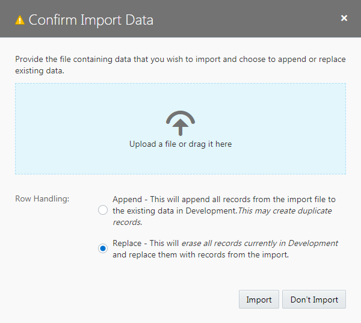
ダイアログ・ボックスの中央にある 「Upload a file or drag it here」 と書かれたボックスをクリックするとファイルを開くウィンドウが表示されるので、このパートのステップ1でダウンロードした
Department.csvを開き、 「Import」 ボタンをクリックします。 -
「Import from File」 ダイアログ・ボックスにインポートが成功したことを表すメッセージが表示されたら、 「Close」 ボタンをクリックします。

-
ビジネス・オブジェクト Department の 「Data」 タブ・ページにインポートされたデータが表示されることを確認します。
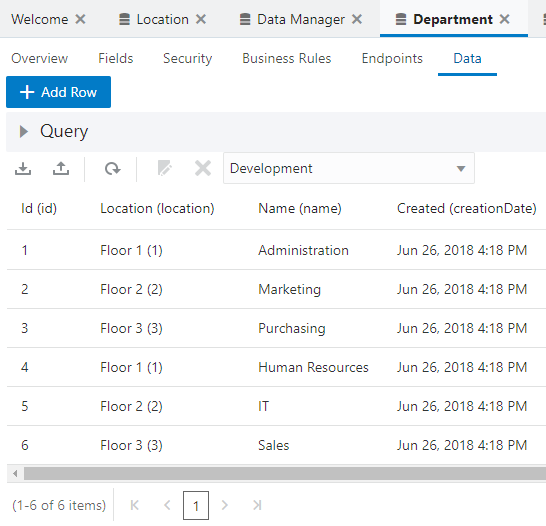
次にレコードを編集するページの作成に進みます。
レコードを編集するページの作成
-
アプリケーション・デザイナで Departments（部門一覧）ページを開き、『Department のレコードの一覧を表示するテーブルの追加』で追加した Table コンポーネントを選択します。 Table コンポーネントのプロパティ・インスペクタで
 （Quick Start）アイコンをクリックし、「Add Edit Page」 をクリックします。
（Quick Start）アイコンをクリックし、「Add Edit Page」 をクリックします。
-
「Add Edit Page」 ダイアログ・ボックスが表示されます。 「Select Endpoint」 ページでは、編集するレコードのデータを取得する際にコールする REST エンドポイントを指定します。 「Business Objects」 → 「Department」 を選択します。 「Next」 ボタンをクリックします。
-
「Add Edit Page」 ダイアログ・ボックスの 「Select Update Endpoint」 ページでは、レコードを更新する際にコールする REST エンドポイントを指定します。 「Business Objects」 → 「Department」 をします。 「Next」 ボタンをクリックします。
-
「Add Edit Page」 ダイアログ・ボックスの 「Page Details」 ページの 「Select fields」 で 「name」 と 「location」 を順番にチェックします。
画面右側の 「Button label」 テキスト・フィールドの値を
編集に変更します。 次に、「Page Title」 テキスト・フィールドの値を部門レコードの作成に変更します。「Page name」 は「EditDepartment」を入力します。 「Finish」 ボタンをクリックします。
-
「Add Edit Page」 ダイアログ・ボックスで 「Finish」 ボタンをクリックすると、Departments ページの Heading コンポーネントと Table コンポーネントの間の Toolbar コンポーネントの中には、「編集」 ボタンが配置されています。 追加された 「編集」 ボタンは、テーブルでレコードが選択されるまでは無効化されています。
次にレコードの詳細を表示するページの作成に進みます。
レコードの詳細を表示するページの作成
-
アプリケーション・デザイナで Departments （部門一覧）ページを開き、『Department のレコードの一覧を表示するテーブルの追加』 で追加した Table コンポーネントを選択します。 Table コンポーネントのプロパティ・インスペクタで
（Quick Start）アイコンをクリックし、「Add Detail Page」 をクリックします。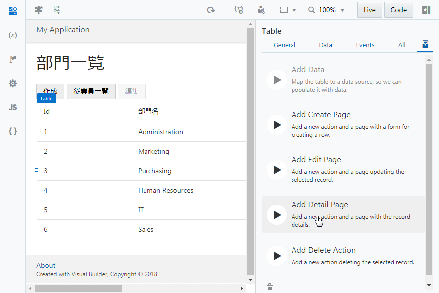
-
「Add Detail Page」 ダイアログ・ボックスが表示されます。 「Select Endpoint」 ページでは、レコードのデータを取得する際にコールする REST エンドポイントを指定します。 「Business Objects」 → 「Department」 を選択し、 「Next」 ボタンをクリックします。
-
「Add Detail Page」 ダイアログ・ボックスの 「Page Details」 ページでは、ページに表示するビジネス・オブジェクトのフィールドを選択します。 最初に、 「Select fields」 で 「response」 ツリーの一番下に表示されている 「name」 をチェックします。
次に、「response」 ツリーの 「locationObject」 → 「items」 → 「items[i]」 ノードの 「Name」 をチェックします。
画面右側の 「Button label」 テキスト・フィールドの値を
詳細に変更します。 次に、「Page Title」 テキスト・フィールドの値を部門詳細に変更します。「Page name」 は「DepartmentDetail」を入力します。 「Finish」 ボタンをクリックします。
-
「Add Detail Page」 ダイアログ・ボックスで 「Finish」 ボタンをクリックすると、Departments ページの Heading コンポーネントと Table コンポーネントの間の Toolbar コンポーネントの中には、「詳細」 ボタンが配置されています。 追加された 「詳細」 ボタンは、テーブルでレコードが選択されるまでは無効化されています。
以上で、パート5は完了です。
パート6: Employee のレコードの編集、詳細、削除処理の実装
このパートでは、ビジネス・オブジェクト Employee のレコードを編集、詳細、削除処理を実装します。
データのインポート
-
Employee.csv をダウンロードします。
-
アーティファクト・ブラウザで
 （Business Objects）タブをクリックします。
（Business Objects）タブをクリックします。 -
「Employee」 をクリックしてアプリケーション・デザイナで開きます。 「Data」 タブ・ページで （Import from File）アイコンをクリックします。
-
「Confirm Import Data」 ダイアログ・ボックスが表示されます。 「Row Handling」 では、 「Replace」 を選択します。 「Replace」 を選択すると、既存のデータを CSV ファイルのデータと置き換えます。

ダイアログ・ボックスの中央にある 「Upload a file or drag it here」 と書かれたボックスをクリックするとファイルを開くウィンドウが表示されるので、このパートのステップ1でダウンロードした
Employee.csvを開き、 「Import」 ボタンをクリックします。 -
「Import from File」 ダイアログ・ボックスにインポートが成功したことを表すメッセージが表示されたら、 「Close」 ボタンをクリックします。
-
ビジネス・オブジェクト Employee の 「Data」 タブ・ページにインポートされたデータが表示されることを確認します。
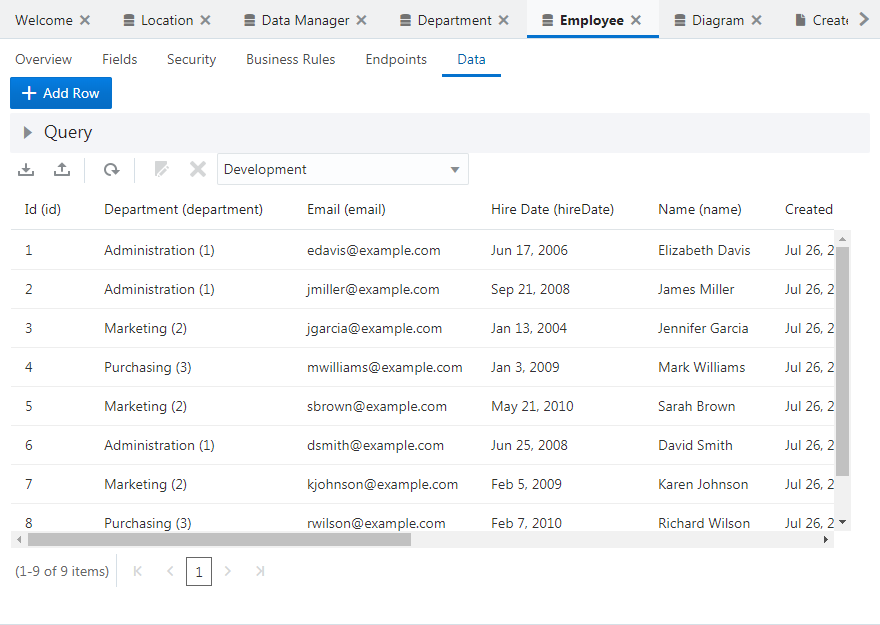
次にレコードを編集するページの作成に進みます。
レコードを編集するページの作成
-
アプリケーション・デザイナで Employees（従業員一覧）ページを開き、『Employee のレコードの一覧を表示するページの追加』 で追加した Table コンポーネントを選択します。 Table コンポーネントのプロパティ・インスペクタで
 （Quick Start）アイコンをクリックし、「Add Edit Page」 をクリックします。
（Quick Start）アイコンをクリックし、「Add Edit Page」 をクリックします。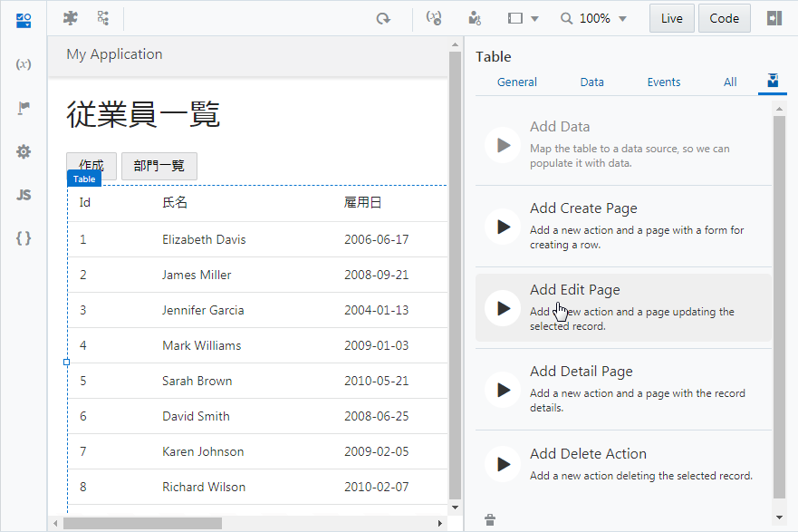
-
「Add Edit Page」 ダイアログ・ボックスが表示されます。 「Select Endpoint」 ページでは、編集するレコードのデータを取得する際にコールする REST エンドポイントを指定します。 「Business Objects」 → 「Employee」 を選択します。 「Next」 ボタンをクリックします。
-
「Add Edit Page」 ダイアログ・ボックスの 「Select Update Endpoint」 ページでは、レコードを更新する際にコールする REST エンドポイントを指定します。 「Business Objects」 → 「Employee」 を選択します。 「Next」 ボタンをクリックします。
-
「Add Edit Page」 ダイアログ・ボックスの 「Page Details」 ページの 「Select fields」 で 「name」 と 「hireDate」、「email」、「department」 を順番にチェックします。
画面右側の 「Button label」 テキスト・フィールドの値を
編集に変更します。 次に、「Page Title」 テキスト・フィールドの値を従業員レコードの作成に変更します。「Page name」 に「
EditEmployee」を入力します。 「Finish」 ボタンをクリックします。 -
「Add Edit Page」 ダイアログ・ボックスで 「Finish」 ボタンをクリックすると、Employees ページの Heading コンポーネントと Table コンポーネントの間の Toolbar コンポーネントの中には、「編集」 ボタンが配置されています。 追加された 「編集」 ボタンは、テーブルでレコードが選択されるまでは無効化されています。
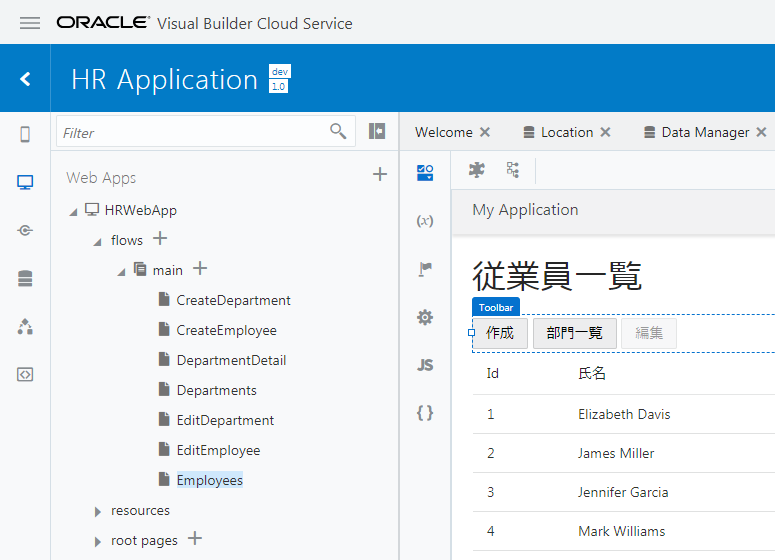
次にレコードの詳細を表示するページの作成に進みます。
レコードの詳細を表示するページの作成
-
アプリケーション・デザイナで Employees（従業員一覧）ページを開き、『Employee のレコードの一覧を表示するテーブルの追加』 で追加した Table コンポーネントを選択します。 Table コンポーネントのプロパティ・インスペクタで
（Quick Start）アイコンをクリックし、「Add Detail Page」 をクリックします。
-
「Add Detail Page」 ダイアログ・ボックスが表示されます。 「Select Read Endpoint」 ページでは、レコードのデータを取得する際にコールする REST エンドポイントを指定します。 「Business Objects」 → 「Employee」 を選択します。 「Next」 ボタンをクリックします。
-
「Add Detail Page」 ダイアログ・ボックスの 「Page Details」 ページでは、ページに表示するビジネス・オブジェクトのフィールドを選択します。 最初に、 「Select fields」 で 「response」 ツリーの一番下に表示されている 「name」 と 「hireDate」、「email」 をチェックします。
次に、「response」 ツリーの 「departmentObject」 → 「items」 → 「items[i]」 ノードの 「Name」 をチェックします。
画面右側の 「Button label」 テキスト・フィールドの値を
詳細に変更します。 次に、「Page Title」 テキスト・フィールドの値を従業員詳細に変更します。「Page name」 は「
EmployeeDetail」を入力します。 「Finish」 ボタンをクリックします。 -
「Add Detail Page」 ダイアログ・ボックスで 「Finish」 ボタンをクリックすると、Employees ページの Heading コンポーネントと Table コンポーネントの間の Toolbar コンポーネントの中には、「詳細」 ボタンが配置されています。 追加された 「詳細」 ボタンは、テーブルでレコードが選択されるまでは無効化されています。

次にレコードを削除するボタンの追加に進みます。
レコードを削除するボタンの追加
-
アプリケーション・デザイナで Employees（従業員一覧）ページを開き、『Employee のレコードの一覧を表示するテーブルの追加』で追加した Table コンポーネントを選択します。 Table コンポーネントのプロパティ・インスペクタで
（Quick Start）アイコンをクリックし、「Add Delete Action」 をクリックします。
-
「Add Delete Action」 ダイアログ・ボックスが表示されます。 「Select Endpoint」 ページでは、レコードを削除する際にコールする REST エンドポイントを指定します。 「Business Objects」 → 「Employee」 を選択します。 「Finish」 ボタンをクリックします。
-
「Add Delete Action」 ダイアログ・ボックスで 「Finish」 ボタンをクリックすると、Employees ページの Heading コンポーネントと Table コンポーネントの間の Toolbar コンポーネントの中には、「Delete Employee」 ボタンが配置されています。 追加された 「Delete Employee」 ボタンは、テーブルでレコードが選択されるまでは無効化されています。
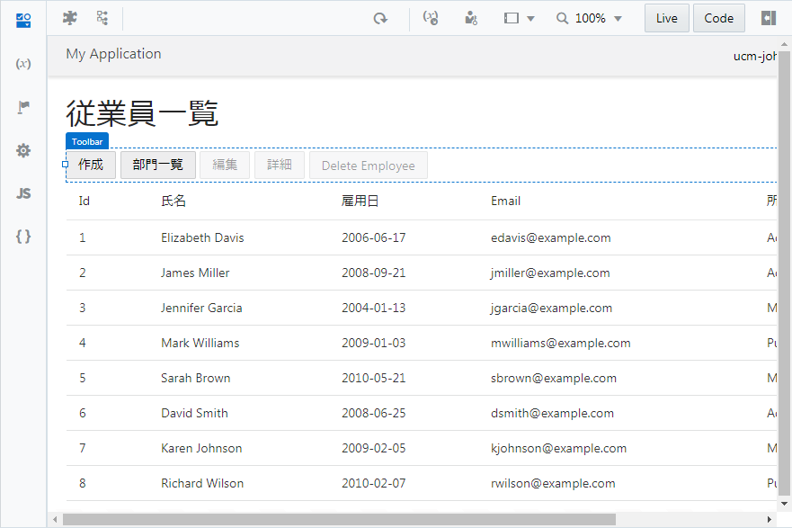
以上で、Visual Builderのチュートリアルは終了です。コードレスなWebアプリケーションの作成をご体感頂けたでしょうか。